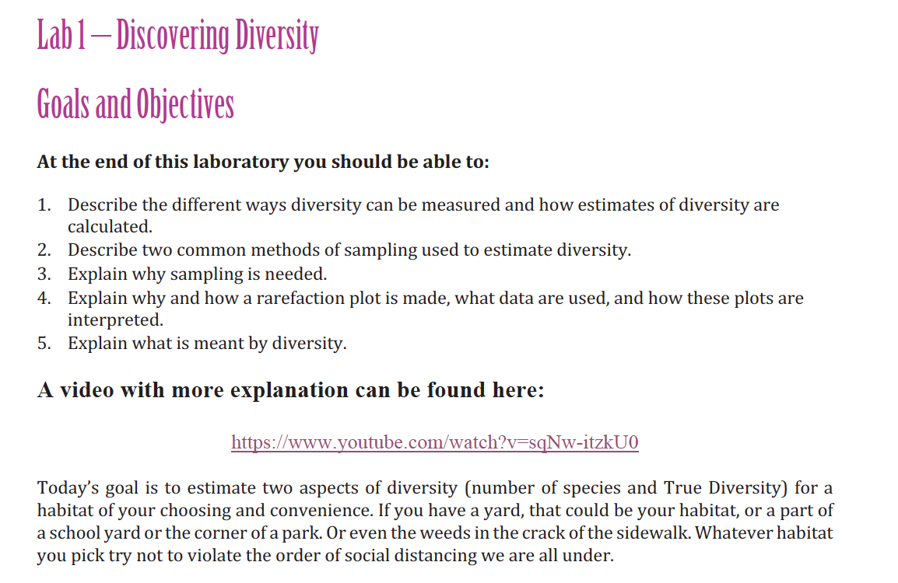
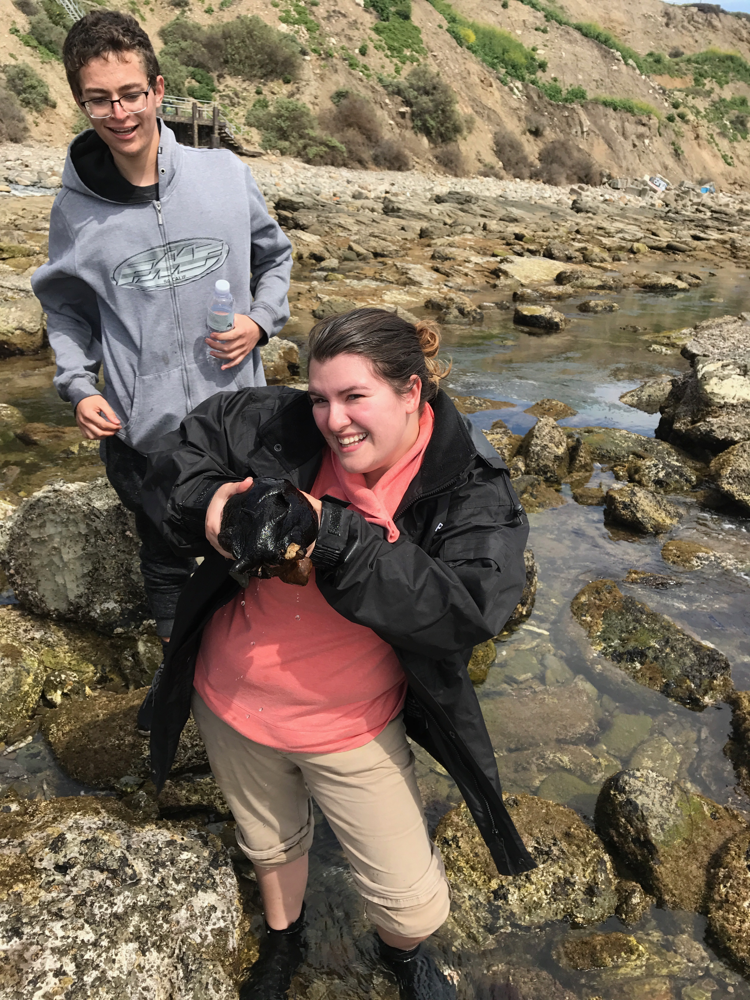

Teaching
BioSci 2B: Introduction to Biological Sciences: Principles of Ecology and Evolution
Graduate TA | 1 quarters: 2020
UC Davis
As a teaching assistant for an introductory-level course in the biological sciences curriculum, I instructed and graded lab sections and proctored exams. Lab topics range from population and quantitative genetics with fruit flies to assessing diversity in different plant communities and predation experiments with Gambusia and mosquito larvae. Overall TA evaluation (n = 98): 4.9/5.0.
 BIO 260: Biostatistics
BIO 260: Biostatistics
Graduate TA | 5 semesters: 2017-2019
Cal State Long Beach
Biostatistics is an intensive upper-division course at Cal State Univ. Long Beach that teaches probability and introductory statistics for use in answering biological questions. During these lab sections I lectured on the theory and basis of statistical analysis from descriptive stats through ANOVA and linear regression and correlation, followed by an in depth walk through of how to perform statistical analysis in the program R. Teaching for this course was much more independent than a typical TA position. I was responsible for designing my own lectures, exams, quizes, and homework assignments as well as grading. Given such independence I was able to truly refine my teaching skills and ways of making an initially intimidating subject attainable and interesting to students. During my last semester teaching the lab for Biostats the core instructor's child was born early, I was chosen to take over teaching the core lecture for the course. During this time I taught in a lecture hall with 300 students present. Overall TA evaluation (n = 24): 4.9/5.0.
BIO 153: Introduction to Marine Biology
Graduate TA | 1 semester: 2017
Cal State Long Beach
 Intro to Marine Bio is a course for lower division students interested in marine science. The course is designed to describe how marine animals survive in aquatic conditions and the interactions among organisms within marine communities. The students are typically being introduced to science for the first time in their college career. The structure of my lectures was to teach about marine ecology and describe some of the questions scientists are interested in. Then the students are brought to the field and have the opportunity to collect data from commonly used methods in marine science such as sein netting, transect tape surveys, timed visual surveys, morphological measurements, and more. The students wrote lab reports and had the opportunity to analize and interpret data they collected.